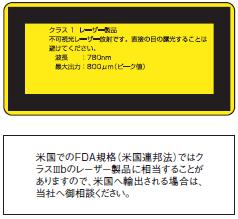
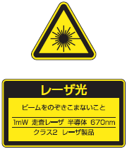
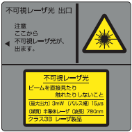
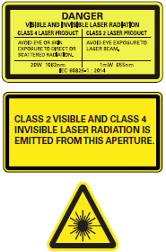

Building Automation
Industrial Automation
Power Automation & Safety


Bangladesh Distributor
 Cautions
Cautions
- Cautions in Common
- Agreements before Purchase
- Degree of Protection
- Symbol Guide
- Safety Warning
- Safety Standards for Laser Beams
- Chemical Resistance
Safety Standards for Laser Beams
The laser beams that are emitted from lasers have a high power density and can cause damage to the human body, even if the quantity of light is small. In Japan, in order to prevent injury to users of laser products, a Japanese Industrial Standard, Radiation Safety Standards for Laser Products (JIS C 6802), has been established. It is based on the corresponding International Electrotechnical Commission (IEC) standard.
The JIS C 6802 standard divides laser products into different classes according to the degree of the hazard, and specifies the required safety measures for each class.
An overview of the classifications is given on the below.
| Class | Overview of hazard evaluation |
| Class 1 | Laser products that are safe under any reasonably foreseeable operating conditions, even when viewed with loupes, binoculars, or other optical viewing instruments. Laser products that emit visible light may still produce dazzling visual effects. |
| Class 1M | Laser products that are safe under any reasonably foreseeable operating conditions when viewed with the naked eye. Under certain conditions, the use of optical instruments may result in eye injury. |
| Class 1C | Laser products that are safe for direct laser irradiation of body tissue
other than the eye area for medical and beauty care applications. The emitted laser beam may be on the level of Class 3R, 3B, or 4 and there is potential danger to the target tissue. |
| Class 2 | Laser products that are normally safe for momentary exposure due to the protection afforded eyes by aversion reactions, such as blinking, but that can be dangerous if someone deliberately looks into the beam. Caution is required for visual impairments caused by residual images or reflection actions caused by surprise. |
| Class 2M | Same as Class 2 for the naked eye: Laser products that are normally safe for momentary exposure due to the protection afforded eyes by aversion reactions, such as blinking, but that can be dangerous if someone deliberately looks into the beam. Caution is required for visual impairments caused by residual images or reflection actions caused by surprise. Under certain conditions, the use of optical instruments may result in eye injury. |
| Class 3R | The risk of injury is less than Class 3B for direct intrabeam exposure. Intentional ocular exposure is dangerous. Caution is required for visual impairments caused by residual images or reflection actions caused by surprise. |
| Class 3B | Even accidental short-term ocular exposure to the beam is normally dangerous. Under certain conditions, minor skin injury or combustion of flammable materials is possible. |
| Class 4 | Intrabeam viewing and skin exposure are dangerous. There is also a risk of fire. |
Laser Classifications
The safety standards for laser beams are different for each country and region. The definitions for laser classifications in Europe and the United States are described below.
Europe (EN 60825-1)
The classification standards set forth in European Standard EN 60825-1:2014 is consistent with the JIS standard C6802:2014.
You should always check the original text of the standard when trying to attain conformance.
USA
* The following information was edited by OMRON based on the actual standard. OMRON assumes no responsibility for this information. You should always check the original text of the standard before implementing an actual application.
* Filing is required for laser products for the USA. Select products that have been filed with the FDA (U.S. Food and Drug Administration).
* Currently the USA is preparing to adopt the IEC 60825-1 international standard, which was harmonized between the EU and JIS. During the provisional period, the classifications and labeling of IEC will be approved (Laser Notice No.50). For details refer to Laser Notice No.50 and to the IEC Standards.
Some OMRON products are classified by the standards given in Laser Notice No.50. Others are classified by the FDA standards.
| Description of FDA classification definition | |
| Class I | Considered nonhazardous. |
| Class IIa | Products that have emissions in the visible spectrum (400 to 710 nm) and that are nonhazardous for viewing durations up to 1,000 s. Viewing for longer than 1,000 s presents the risk of chronic visual impairment. |
| Class II | Products that have emissions in the visible spectrum and that have an emission power of more than 1 mW for continuous discharge of more than 0.25 s. Viewing the laser beam presents the risk of chronic visual impairment. |
| Class IIIa | Products that have emissions in the visible spectrum and that have an emission power of more than 5 mW for continuous discharge of more than 0.38 ms. Irradiance presents the risk of acute or chronic visual impairment resulting from viewing the beam. Directly viewing the laser beam with an optical instrument presents the risk of acute visual impairment. |
| Class IIIb | Products that emit laser beams of any wavelengths, for example products that emit visible light with an emission power of 5 to 500 mW. Direct contact with the light beam presents the risk of acute visual impairment or skin damage. |
| Class IV | Products that exceed the limits of Class IIIb and that present a risk for visual impairment or skin damage for scattered (diffuse) reflection as well as for direct exposure. |
Measures for the Prevention of Damage due to Laser Beams
Regarding labor using lasers, the Industrial Safety and Health Law sets out specific details of safety measures for laser equipment that are classified as Class 3R or higher in Measures for the Prevention of Damage due to Laser Beams. The following table gives the criteria for the measures by each class.
| Measure (item only) | Measure | Class of laser equipment | ||||||
| 4 | 3B | 3R | 2M | 1M | ||||
| Appointment of a laser device manager |
Appoint an individual with sufficient knowledge and experience regarding the prevention of damage due to laser beams and the handling of laser equipment. |
Yes | Yes | Yes | ||||
| Controlled area (signs and restricted area) |
Partition from other areas, indicate the partition with signs, and prohibit entry to unauthorized personnel. |
Yes | Yes | |||||
| Laser equip- ment |
Path of laser beam |
Position of path |
Avoid eye level of the operator. | Yes | Yes | Yes | Yes | Yes |
| Appropriate design and blocking of path |
Keep the path as short as possible, minimize the number of bends, avoid intersections of light with pathways, and block light paths as much as possible. |
Yes | Yes | Yes | ||||
| Proper termination |
Terminate with diffuse reflection objects or light absorbing objects that have appropriate reflectance and heat resistance. |
Yes | Yes | Yes | Yes | Yes | ||
| Key control | Use a construction where operation is enabled by key or similar means. |
Yes | Yes | |||||
| Emer- gency stop switches, etc. |
Emergency stop switches |
Provide an emergency stop switch that can be used to immediately stop laser-beam emission. |
Yes | Yes | ||||
| Warning system | Provide a warning system with features that allow easy confirmation, such as indicators that light automatically. |
Yes | Yes | Yes | ||||
| Shutter | Provide the emission aperture with a shutter to prevent accidental emission. |
Yes | Yes | |||||
| Interlock system, etc. | Ensure that laser-beam emission is stopped automatically when the controlled area becomes accessible or the beam patch is unblocked. |
Yes | Yes | |||||
| Indication of emission aperture |
Indicate the laser-beam emission aperture. | Yes | Yes | Yes | ||||
| Work man- agement, etc. |
Operating position | Perform control of laser equipment from a position as far away as possible form the laser-beam path. |
Yes | |||||
| Adjustment of optical system |
Use the minimum amount of power that is required when adjusting the optical system. |
Yes | Yes | Yes | Yes | Yes | ||
| Protec- tive equip- ment |
Protective glasses |
Wear protective glasses appropriate for the type of laser used. |
Yes | Yes | Yes | |||
| Protective clothing |
Wear clothing that allows only minimum skin exposure. |
Yes | Yes | |||||
| Use of flame- retardant materials |
Wear clothing made of flame-retardant materials. Synthetic fibers that melt and become sphere-shaped are unsuitable. |
Yes | ||||||
| Inspections and maintenance |
Perform inspections before operation and regular inspections and adjustments at fixed intervals. |
Yes | Yes | Yes | Yes | Yes | ||
| Safety and health education |
Provide training when taking on new personnel, and when changing the work procedure or the laser equipment. |
Yes | Yes | Yes | Yes | Yes | ||
| Health- care |
Examinations of anterior ocular segment |
Administer cornea and lens examinations together with eyesight examinations when taking on or transferring personnel. |
Yes | Yes | Yes | |||
| Examinations of the ocular fundus |
Administer ocular-fundus examinations together with eyesight examinations when taking on or transferring personnel. |
Yes | ||||||
| Others | Notifica- tion |
Supervisor's name |
Provide notification of the laser-equipment supervisor's name. |
Yes | Yes | Yes | ||
| Level of the hazard indication |
Provide notification regarding the risks and harmful effects of laser beams, as well as handling precautions in an obvious location. |
Yes | Yes | Yes | Yes | Yes | ||
| Installation | Provide signs that indicate the presence of laser-equipment. |
Yes | Yes | |||||
| High voltage display | Provide indication of high voltages and implement measures for preventing electric shock. |
Yes | Yes | Yes | Yes | Yes | ||
| Prohibi- tion of hazard- ous objects |
In controlled areas |
Prohibit explosive and flammable substances. | Yes | |||||
| Close to path of laser beam |
Prohibit explosive and flammable substances. | Yes | Yes | |||||
| Hazardous gases and dusts | Implement the measures prescribed by the Industrial Safety and Health Law. |
Yes | Yes | |||||
| Examination and treatment of personnel with suspected laser-related injury by medical professional |
Make it possible for personnel with suspected laser-related injury to be examined and treated quickly by a medical professional. |
Yes | Yes | Yes | Yes | Yes | ||
Standards for Europe
Laser Classifications and Requirements
Europe (EN 60825-1)
* The following information was edited by OMRON based on the actual standard. OMRON assumes no responsibility for this information. You should always check the original text of the standard before implementing an actual application.
| Requirement | Classification | ||||||
| Class 1 | Class 1M | Class 2 | Class 2M | Class 3R | Class 3B | Class 4 | |
| Description of hazard class |
Safe under reasonably foreseeable conditions. |
As for Class 1 except may be hazardous if user employs optics. |
Low power; eye protec- tion normally afforded by aversion responses. |
As for Class 2 except may be hazardous if user employs optics. |
Direct intrabeam viewing may be hazardous. |
Direct intrabeam viewing normally hazardous. |
High power; diffuse reflections may be hazardous. |
| Protective housing |
Required for build-in laser products. |
Required for each laser product; limits access except when necessary for performance of functions of the products. |
|||||
| Access panel safety interlock |
Designed to prevent removal of the panel until accessible emission values are below that for Class 3R. |
Designed to prevent removal of the panel until accessible emission values are below that for Class 3B or 3R. |
|||||
| Remote interlock connector |
Not required. | Permits easy addition of external interlock in laser installation. |
|||||
| Manual reset | Not required. | Manual reset is required when power is interrupted or a remote interlock is activated. |
|||||
| Key control | Not required. | Laser inoperative when key is removed. |
|||||
| Laser emission warning |
Not required. | Gives audible or visible warning when laser is switched on or if capacitor bank of pulsed laser is being charged. For Class 3R only, applies if invisible radiation is emitted. |
|||||
| Beam stop or attenuator |
Not required. | Gives means to temporarily block beam. |
|||||
| Controls | Not required. | Controls so located that there is no danger of exposure to accessible emission limit above Class 1 or 2 when adjustments are made or operation is performed. |
|||||
| Viewing optics | Not required. | Emissions from all observation system must be below the accessible emission limits of Class 1M. |
|||||
| Scanning safeguard |
Lasers must not exceed their assigned laser class even if scan failures occur. | ||||||
| Class label | Required wording. | Figures A and B and required wording. | |||||
| Aperture label | Not required. | Specified wording required. | |||||
| Service entry label |
Not required. | Required as appropriate to the class of accessible radiation. | |||||
| Labels for safety interlocked panels |
Required under certain conditions as appropriate to the class of laser used. | ||||||
| Warning for visible and invisible laser radiation |
Required for certain wavelength ranges. | ||||||
| Information for the user |
Operation manuals must contain instructions for safe use. Additional requirements apply for Class 1M and Class 2M. |
||||||
| Purchasing and servicing information |
Promotion brochures must specify product classification; service manuals must contain safety information. |
||||||
Note:
1. The above table is a summarization of the basic requirements. You should always check the original text of the standard to understand and apply the actual standards.
2. Laser equipment used for healthcare applications are subject to IEC 60601-2-22.
3. Refer to IEC TR 60825-14 for a user's guide for laser products.
Standards for the USA
Laser Manufacturer Requirements
Conformance Guide for FDA Laser Products (April 2013)
(If you file with the FDA based on Laser Notice No.50, implement measures according to the IEC standards (same as the EN standards) and not according to the standards in this table.)
* The following information was edited by OMRON based on the actual standard. OMRON assumes no responsibility for this information. You should always check the original text of the standard before implementing an actual application.
| Requirement | Laser Class *1 | |||||
| Class I | Class IIa | Class II | Class IIIa | Class IIIb | Class IV | |
| Capability (all laser products) | ||||||
| Protective housing |
Required. *2 | Required. *2 | Required. *2 | Required. *2 | Required. *2 | Required. *2 |
| Safety interlocks | Required. *3 *4 |
Required. *3 *4 |
Required. *3 *4 |
Required. *3 *4 |
Required. *3 *4 |
Required. *3 *4 |
| Location of controls |
Exception | Required. | Required. | Required. | Required. | |
| Limits on optics for observation |
Required. | Required. | Required. | Required. | Required. | Required. |
| Scanning safeguard |
Required. | Required. | Required. | Required. | Required. | Required. |
| Operation and performance (laser system) | ||||||
| Remote interlock connector |
Exception | Exception | Exception | Exception | Required. | Required. |
| Key control | Exception | Exception | Exception | Exception | Required. | Required. |
| Laser radiation emission indicator |
Exception | Exception | Required. | Required. | Required. *10 | Required. *10 |
| Beam attenuator | Exception | Exception | Required. | Required. | Required. | Required. |
| Manual reset mechanism |
Exception | Exception | Exception | Exception | Exception | Required. *13 |
| Operation and performance (products for a specific purpose) | ||||||
| Medical laser products |
Same requirements as other products in same class. |
Same requirements as other products in same class. |
Same requirements as other products in same class. |
Same requirements as other products in same class *8. |
Same requirements as other products in same class *8. |
Same requirements as other products in same class *8. |
| Surveying, leveling, and alignment laser products |
Same requirements as other products in same class. |
Same requirements as other products in same class. |
Same requirements as other products in same class. |
Same requirements as other products in same class. |
Prohibited. | Prohibited. |
| Demonstration laser products |
Same requirements as other products in same class. |
Same requirements as other products in same class. |
Same requirements as other products in same class. |
Same requirements as other products in same class. |
Same requirements as other products in same class *11. |
Same requirements as other products in same class *11. |
| Labelling (all laser products) | ||||||
| Tests for determination of compliance |
Required. | Required. | Required. | Required. | Required. | Required. |
| Protective housing |
Depends on the internal radiation level *5. |
Required. *5 | Required. *5 | Required. *5 | Required. *5 | Required. *5 |
| Aperture | Exception | Exception | Required. | Required. | Required. | Required. |
| Class warning | Exception | Required. *6 | Required. *7 | Required. *9 | Required. *12 | Required. *12 |
| Information (all laser products) | ||||||
| Information for the user |
Required. | Required. | Required. | Required. | Required. | Required. |
| Product documentation |
Exception | Required. | Required. | Required. | Required. | Required. |
| Servicing information |
Required. | Required. | Required. | Required. | Required. | Required. |
*1. Depends on the maximum possible exposure level during operation.
*2. Required for human exposure to laser radiation exceeding Class I other than radiation required for product functions.
*3. Required of a protective structure that can be opened during operation or maintenance when human exposure is never necessary while the structure is open.
*4. Interlock requirements depend on the internal emission class.
*5. The warning text depends on the laser emission level within the structure and on the wavelengths.
*6. Label with warning text.
*7. Logotype for CAUTION.
*8. An instrument to measure the laser emission level for intentional human radiation.
*9. "CAUTION" for 2.5 mW/cm2 and "DANGER" for over 2.5 mW/cm2.
*10. A time delay is required between emission display and emission.
*11. Variance (21 CFR 1010.4) approval is required for demonstration lasers or light shows for Class IIIb or IV.
*12. DANGER logotype.
*13. Required from August 20, 1986.
Main Laser Product Classifications
| JIS/IEC/EN | FDA | Product name | Model |
| Class category |
Class category | ||
| Class 1 | Class 1 (Laser Notice No.50) | Laser-type Smart Sensors | ZX2-LD50V |
| Class II | ZX-LT001/030 | ||
| Class II | ZX-LT005/010 | ||
| Class 1 (Laser Notice No.50) | CMOS Laser Sensors with Built-in Digital Amplifiers |
ZX0-LD50A[]L/LD100A[]L/ LD300A[]L/LD600A[]L |
|
| Class 1 (Laser Notice No.50) | CMOS Laser Displacement Sensors with Built-in Digital Amplifiers |
ZX1-LD50A[]L/LD100A[]L/ LD300A[]L/LD600A[]L |
|
| Class II | Photoelectric Sensors with Separate Digital Amplifiers (Laser-type Amplifier Units) |
E3C-LR12 | |
| Class 1 (Laser Notice No.50) | Photoelectric Sensors with Built-in Amplifiers (Laser-type Amplifier Units) |
E3Z-LR | |
| E3Z-LT | |||
| E3Z-LL | |||
| Class II | Smart Laser CCD Micrometer Sensors | ZX-GT[][]S | |
| Class 1 (Laser Notice No.50) | CMOS-type Smart Laser Heads | E3NC-SH100/250 | |
| Smart Laser Heads | E3NC-LH01 | ||
| E3NC-LH02 | |||
| E3NC-LH03 | |||
| Class I | Safety Laser Scanners | OS32C | |
| Class 2 | Class II | Laser-type Smart Sensors | ZS-HLDS[] |
| Class II | Smart Sensors (2D CMOS Laser Type) | ZS-LD[][] | |
| Class 2 (Laser Notice No.50) | Laser-type Smart Sensors | ZX2-LD[]/ZX2-LD[]L | |
| Class II | ZX-LD[] | ||
| Class 2 (Laser Notice No.50) | CMOS Laser Sensors with Built-in Digital Amplifiers |
ZX0-LD50A[]/LD100A[]/ LD300A[]/LD600A[] |
|
| CMOS Laser Displacement Sensors with Built-in Digital Amplifiers |
ZX1-LD50A[]/LD100A[]/ LD300A[]/LD600A[] |
||
| Class II | Photoelectric Sensors with Separate Digital Amplifiers (Laser-type Amplifier Units) |
E3C-LD11/21/31 | |
| Class II | E3C-LR11 | ||
| Class 2 (Laser Notice No.50) | CMOS-type Smart Laser Heads | E3NC-SH250H | |
| Class 2 (Laser Notice No.50) | Laser-type Installed Bar Code Readers | V500-R521[][] | |
| Class 2 (Laser Notice No.50) | Laser-type Bar Code Readers | V500-R2[][] | |
| No application filed. | Laser Micrometers | 3Z4L-S5[][]RV3 | |
| Class II | Smart 2D Profile Measurement Sensors | ZG2-WDS3V | |
| Class II | Laser Pointers | F39-PTJ/PTR | |
| Class 2M | Class IIIb | Smart 2D Profile Measurement Sensors | ZG2-WDS70/WDS22/WDS8 |
| Class 3B | No application filed. | UV-Light Curing Systems (Head Unit) | ZUV-H20MC/H30MC/H10MC/H25MC/H35MC |
| Class 4 | Class 4 (Laser Notice No. 50) | Fiber Laser Markers* | MX-Z2000G Series |
Note: For details, refer to your OMRON website.
* Lasers for processing are Class 4. Guide lasers are Class 2.
Precautions for Safe Use of Laser Beams
(1) Ensure that the laser beam does not enter the eye either directly or by reflection off a mirror surface.
(When using a Class 4 laser, avoid eye or skin exposure to direct or scattered laser beams.)
(2) Labels of the type shown below are attached to Sensors that use lasers. (These are typical examples.) Observe the instructions given on the labels when handling the Sensors.
| Class 1 Labels | Class 2 Labels |
 |
 |
| Class 3B Labels | Class 4 Labels |
 |
 |
(3) Adjust the optical axis with an IR scope or a fluorescent plate that converts infrared rays into visible light.
(This does not apply to laser markers.)
(4) When exporting products to the EU or USA, attach the following labels, which are packed with the products. US FDA labels are included only with products that have been filed and registered with the FDA. (This does not apply to laser markers.)
Europe (EN Standard)
USA (FDA)